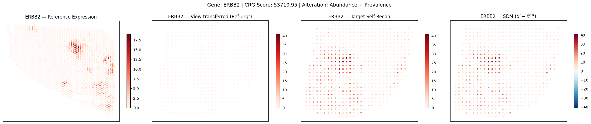
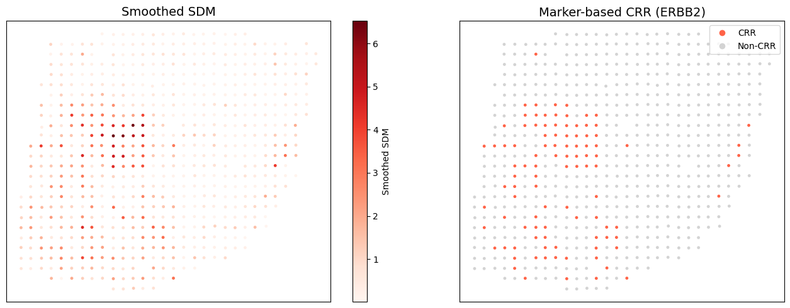

Downstream Analysis: CRG Identification, Alteration Type Disentanglement & CRR Delineation
This notebook performs three downstream analyses after SILPAG model training:
Task 1: CRG Identification — Identify condition-responsive genes.
Task 2: Alteration Type Disentanglement — Determine the nature of each CRG’s alteration.
Task 3: CRR Delineation — Delineate condition-responsive tissue regions.
Prerequisites: A trained SILPAG model saved from Getting Started with SILPAG.
0. Setup
[1]:
import warnings
warnings.filterwarnings('ignore')
import scanpy as sc
import anndata as ad
import numpy as np
import pandas as pd
import torch
from scipy import sparse
import matplotlib.pyplot as plt
import seaborn as sns
import matplotlib
import SILPAG as sp
Matplotlib is building the font cache; this may take a moment.
1. Load Data & Preprocessing
Same preprocessing as demo_test.ipynb — load reference (normal breast) and target (breast cancer), intersect genes, filter.
[3]:
ref = sc.read_h5ad('SILPAG/data/V02_nb.h5ad')
adata = sc.read_h5ad('SILPAG/data/H1_nb.h5ad')
ref.var_names_make_unique()
adata.var_names_make_unique()
sp.prefilter_specialgenes(ref)
sp.prefilter_specialgenes(adata)
gene = list(set(ref.var_names) & set(adata.var_names))
ref = ref[:, gene]
adata = adata[:, gene]
g1 = sc.pp.filter_genes(ref, min_cells=int(ref.shape[0] * 0.02), inplace=False)
g2 = sc.pp.filter_genes(adata, min_cells=int(adata.shape[0] * 0.02), inplace=False)
ref = ref[:, g1[0] | g2[0]]
adata = adata[:, g1[0] | g2[0]]
key = list(set(ref.var_names) & set(adata.var_names))
ref = ref[:, key]
adata = adata[:, key]
ref.var['hkgene'] = adata.var['hkgene']
labels = np.zeros(ref.shape[1], dtype=int)
labels[np.where(ref.var['hkgene'] == 1)[0]] = 1
del ref.raw
print(f'Reference: {ref.shape}, Target: {adata.shape}')
Reference: (1896, 7874), Target: (613, 7874)
2. Load Trained Model & Generate View-Transferred SGMs
Load the saved model, compute the codebook transport plan, and generate:
result1: view-transferred SGM (reference \(\rightarrow\) target via OT)result2: target self-reconstruction
[4]:
# Load saved config first so that patch_size, K, img_size etc. are restored
args = sp.Config.load_config('SILPAG/saved_model/hBC_demo')
args.device = 'cuda:7'
args.train = False
# Clear size lists — GeneDataset will re-populate them from the actual data
args.orig_img_size = []
args.resized_img_size = []
args.img_size = []
gene_images = [ref.varm['gene_img'], adata.varm['gene_img']]
train_dataset = sp.GeneDataset(gene_images, labels, args)
from torch.utils.data import DataLoader
train_loader = DataLoader(train_dataset, batch_size=args.batch_size, shuffle=False, drop_last=False)
model, dataset, PI, Q = sp.train_marker(train_loader, hist_data=None, args=args)
print(f'Model loaded. Codebook sizes: {[model.get_codebook(i).shape[0] for i in range(args.num_slice)]}')
Shape of each View: [(66, 96), (30, 30)]
Model loaded. Codebook sizes: [51, 203]
[5]:
# Compute gene codes via OT transport plan
code = sp.get_code(model, dataset, hist_data=None, pi_init=PI, source_idx=0, target_idx=1, args=args)
adata.varm['code_ref'] = code[0] # reference -> target (transported)
adata.varm['code_tgt'] = code[1] # target native
# Generate SGMs
result1 = model.generate(args, adata, tgt_index=1, code_id='code_ref', gene='all') # view-transferred
result2 = model.generate(args, adata, tgt_index=1, code_id='code_tgt', gene='all') # target self-recon
print(f'Generated SGMs: {result1.shape}, {result2.shape}')
Generating...: 100%|██████████| 7874/7874 [00:07<00:00, 999.14gene/s]
Generating...: 100%|██████████| 7874/7874 [00:07<00:00, 1018.05gene/s]
Generated SGMs: (613, 7874), (613, 7874)
Task 1: CRG Identification
For each gene \(i\), compute the CRG score:
The anchor gene scores form an empirical null modelled as \(S \sim \Gamma(k, \theta)\). Genes with \(p < 0.05\) are designated as CRGs.
[6]:
# Compute CRG scores
scores = sp.compute_crg_scores(result1, adata)
# Anchor mask from training
anchor_mask = dataset.labels.astype(bool)
print(f'Total genes: {len(scores)}, Anchor genes: {anchor_mask.sum()}')
# Identify CRGs
# null_model='gamma': fits Gamma distribution to anchor scores
# No FDR correction — use raw p-value directly
crg_result = sp.identify_crgs(
scores, anchor_mask,
p_threshold=0.1,
null_model='gamma',
correction=None,
)
n_crg = crg_result['is_crg'].sum()
print(f'Identified {n_crg} CRGs (p < 0.05, null_model=gamma, no FDR)')
print(f'Null info: {crg_result["null_info"]}')
Total genes: 7874, Anchor genes: 1914
Identified 279 CRGs (p < 0.05, null_model=gamma, no FDR)
Null info: {'model': 'gamma', 'k': 0.4413334665723619, 'loc': 0, 'theta': np.float32(1823.2991)}
Store CRG Results in AnnData
[7]:
adata.var['crg_score'] = scores
adata.var['crg_pval'] = crg_result['pvalues']
adata.var['crg_fdr'] = crg_result['pvalues_adj']
adata.var['is_crg'] = crg_result['is_crg']
crg_genes = adata.var_names[crg_result['is_crg']]
print(f'Top 20 CRGs by score:')
adata.var.loc[crg_genes].sort_values('crg_score', ascending=False).head(20)[['crg_score', 'crg_fdr']]
Top 20 CRGs by score:
[7]:
| crg_score | crg_fdr | |
|---|---|---|
| IGLC3 | 112497.500000 | 0.000000e+00 |
| IGHA1 | 111526.664062 | 0.000000e+00 |
| IGHG3 | 107255.210938 | 0.000000e+00 |
| RACK1 | 104407.476562 | 0.000000e+00 |
| S100A9 | 99992.890625 | 0.000000e+00 |
| IGHG4 | 95009.445312 | 0.000000e+00 |
| IGKC | 94801.414062 | 0.000000e+00 |
| IGLC2 | 82554.914062 | 0.000000e+00 |
| TMSB10 | 71694.773438 | 0.000000e+00 |
| UBA52 | 61477.976562 | 1.110223e-16 |
| IGHG1 | 59411.761719 | 4.440892e-16 |
| SSR4 | 58702.164062 | 7.771561e-16 |
| GAPDH | 56386.535156 | 2.664535e-15 |
| ERBB2 | 49524.917969 | 1.234568e-13 |
| KRT19 | 42674.109375 | 5.727863e-12 |
| FTH1 | 34263.519531 | 6.490836e-10 |
| CST3 | 31921.634766 | 2.434778e-09 |
| PFN1 | 29678.187500 | 8.661510e-09 |
| ACTB | 27324.621094 | 3.289481e-08 |
| FAU | 27086.476562 | 3.765760e-08 |
Task 2: Alteration Type Disentanglement
For each CRG, three statistical tests determine the nature of the alteration:
Test |
What it detects |
Method |
|---|---|---|
Differential Abundance |
Shift in expression magnitude |
Wilcoxon rank-sum |
Differential Prevalence |
Change in fraction of expressing spots |
Fisher’s exact (binarised at \(\epsilon\)) |
Differential Spatial Pattern |
Structured spatial discrepancy |
Moran’s I permutation on SDM |
A gene can be assigned to multiple alteration types.
[22]:
df_alt = sp.disentangle_alteration_types(
result_ref=result1,
adata=adata,
crg_mask=crg_result['is_crg'],
epsilon=0.01, # binarisation threshold for prevalence
n_neighbors=15,
fdr_threshold=0.05,
abundance_effect_size=1,
spatial_I_threshold=0.1, # require Moran's I >= 0.1 for spatial
)
print(f'Disentanglement results for {len(df_alt)} CRGs:')
print(df_alt[['is_diff_abundance', 'is_diff_prevalence', 'is_diff_spatial']].sum())
Disentanglement results for 279 CRGs:
is_diff_abundance 128
is_diff_prevalence 178
is_diff_spatial 0
dtype: int64
Detailed Results Table
[ ]:
# Merge CRG scores into the disentanglement table
df_alt['crg_score'] = adata.var.loc[df_alt.index, 'crg_score'].values
df_alt['crg_fdr'] = adata.var.loc[df_alt.index, 'crg_fdr'].values
df_display = df_alt.sort_values('crg_score', ascending=False)
df_display[['crg_score', 'crg_fdr', 'abundance_fdr', 'prevalence_fdr', 'spatial_fdr']].head(15)
| crg_score | crg_fdr | abundance_fdr | prevalence_fdr | spatial_fdr | |
|---|---|---|---|---|---|
| gene | |||||
| IGLC3 | 112497.500000 | 0.000000e+00 | 0.000000e+00 | 1.0 | 0.279 |
| IGHA1 | 111526.664062 | 0.000000e+00 | 0.000000e+00 | 1.0 | 0.279 |
| IGHG3 | 107255.210938 | 0.000000e+00 | 0.000000e+00 | 1.0 | 0.279 |
| RACK1 | 104407.476562 | 0.000000e+00 | 0.000000e+00 | 1.0 | 0.279 |
| S100A9 | 99992.890625 | 0.000000e+00 | 0.000000e+00 | 1.0 | 0.279 |
| IGHG4 | 95009.445312 | 0.000000e+00 | 0.000000e+00 | 1.0 | 0.279 |
| IGKC | 94801.414062 | 0.000000e+00 | 0.000000e+00 | 1.0 | 0.279 |
| IGLC2 | 82554.914062 | 0.000000e+00 | 0.000000e+00 | 1.0 | 0.279 |
| TMSB10 | 71694.773438 | 0.000000e+00 | 0.000000e+00 | 1.0 | 0.279 |
| UBA52 | 61477.976562 | 1.110223e-16 | 0.000000e+00 | 1.0 | 0.279 |
| IGHG1 | 59411.761719 | 4.440892e-16 | 0.000000e+00 | 1.0 | 0.279 |
| SSR4 | 58702.164062 | 7.771561e-16 | 0.000000e+00 | 1.0 | 0.279 |
| GAPDH | 56386.535156 | 2.664535e-15 | 0.000000e+00 | 1.0 | 0.279 |
| ERBB2 | 49524.917969 | 1.234568e-13 | 1.594099e-291 | 1.0 | 0.279 |
| KRT19 | 42674.109375 | 5.727863e-12 | 0.000000e+00 | 1.0 | 0.279 |
| FTH1 | 34263.519531 | 6.490836e-10 | 0.000000e+00 | 1.0 | 0.279 |
| CST3 | 31921.634766 | 2.434778e-09 | 1.927473e-281 | 1.0 | 0.279 |
| PFN1 | 29678.187500 | 8.661510e-09 | 0.000000e+00 | 1.0 | 0.279 |
| ACTB | 27324.621094 | 3.289481e-08 | 6.726679e-276 | 1.0 | 0.279 |
| FAU | 27086.476562 | 3.765760e-08 | 8.043644e-312 | 1.0 | 0.279 |
| EEF2 | 24792.904297 | 1.387828e-07 | 0.000000e+00 | 1.0 | 0.279 |
| CYBA | 21333.750000 | 1.000695e-06 | 0.000000e+00 | 1.0 | 0.279 |
| ATP6V0B | 21237.146484 | 1.057632e-06 | 1.542459e-266 | 1.0 | 0.279 |
| MYL6 | 20754.218750 | 1.394898e-06 | 0.000000e+00 | 1.0 | 0.279 |
| CFL1 | 20331.494141 | 1.777699e-06 | 0.000000e+00 | 1.0 | 0.279 |
| EDF1 | 20115.812500 | 2.011995e-06 | 0.000000e+00 | 1.0 | 0.279 |
| CD74 | 19010.207031 | 3.798737e-06 | 2.858191e-284 | 1.0 | 0.279 |
| CTSD | 18716.736328 | 4.497993e-06 | 1.381200e-318 | 1.0 | 0.279 |
| HLA-B | 16847.978516 | 1.322963e-05 | 7.514544e-268 | 1.0 | 0.279 |
| MGP | 16809.214844 | 1.352980e-05 | 3.593633e-269 | 1.0 | 0.279 |
Example CRG Visualisation
Visualise the reference expression, view-transferred SGM, target self-reconstruction, and SDM.
[ ]:
# Visualise
top_gene = 'S100A8'
gene_idx = list(adata.var_names).index(top_gene)
X_ref_sgm = result1.X.toarray() if sparse.issparse(result1.X) else np.array(result1.X)
# Reference slice: original expression on reference coordinates
ref_expr = ref.X.toarray()[:, gene_idx] if sparse.issparse(ref.X) else np.array(ref.X)[:, gene_idx]
ref_coords = ref.obsm['spatial']
# Target slice
tgt_coords = adata.obsm['spatial']
expr_vt = X_ref_sgm[:, gene_idx] # view-transferred
# Original target expression
tgt_raw = adata.X.toarray()[:, gene_idx] if sparse.issparse(adata.X) else np.array(adata.X)[:, gene_idx]
# Normalize (library-size) + log1p before visualisation
def _norm_log(x):
total = x.sum()
if total > 0:
x = x / total * np.median([ref_expr.sum(), expr_vt.sum(), tgt_raw.sum()])
return np.log1p(x)
ref_expr = _norm_log(ref_expr)
expr_vt = _norm_log(expr_vt)
tgt_raw = _norm_log(tgt_raw)
sdm = tgt_raw - expr_vt # SDM: original target - view-transferred
fig, axes = plt.subplots(1, 4, figsize=(22, 4.5))
# Unified color scale for expression panels
vmin_expr = 0
vmax_expr = max(ref_expr.max(), expr_vt.max(), tgt_raw.max())
# Panel 0: Reference expression (on reference coordinates)
sc0 = axes[0].scatter(ref_coords[:, 0], ref_coords[:, 1], c=ref_expr, s=8, cmap='Reds', vmin=vmin_expr, vmax=vmax_expr)
axes[0].set_title(f'{top_gene} — Reference Expression')
axes[0].set_aspect('equal')
axes[0].invert_yaxis()
plt.colorbar(sc0, ax=axes[0], shrink=0.7)
# Panel 1: View-transferred SGM (on target coordinates)
sc1 = axes[1].scatter(tgt_coords[:, 0], tgt_coords[:, 1], c=expr_vt, s=8, cmap='Reds', vmin=vmin_expr, vmax=vmax_expr)
axes[1].set_title(f'{top_gene} — View-transferred (Ref→Tgt)')
axes[1].set_aspect('equal')
axes[1].invert_yaxis()
plt.colorbar(sc1, ax=axes[1], shrink=0.7)
# Panel 2: Original target expression (on target coordinates)
sc2 = axes[2].scatter(tgt_coords[:, 0], tgt_coords[:, 1], c=tgt_raw, s=8, cmap='Reds', vmin=vmin_expr, vmax=vmax_expr)
axes[2].set_title(f'{top_gene} — Original Target Expression')
axes[2].set_aspect('equal')
axes[2].invert_yaxis()
plt.colorbar(sc2, ax=axes[2], shrink=0.7)
# Panel 3: SDM (symmetric scale)
vlim = max(abs(sdm.min()), abs(sdm.max()))
sc3 = axes[3].scatter(tgt_coords[:, 0], tgt_coords[:, 1], c=sdm, s=8, cmap='RdBu_r', vmin=-vlim, vmax=vlim)
axes[3].set_title(f'{top_gene} — SDM ($x^t - \\hat{{x}}^{{r→t}}$)')
axes[3].set_aspect('equal')
axes[3].invert_yaxis()
plt.colorbar(sc3, ax=axes[3], shrink=0.7)
for ax in axes:
ax.set_xticks([])
ax.set_yticks([])
if top_gene in df_alt.index:
alt_type = df_alt.loc[top_gene, 'alteration_type']
else:
alt_type = 'N/A'
fig.suptitle(f'Gene: {top_gene} | CRG Score: {scores[gene_idx]:.2f} | Alteration: {alt_type}', fontsize=13, y=1.02)
plt.tight_layout()
plt.show()
findfont: Font family 'Arial' not found.
findfont: Font family 'Arial' not found.
findfont: Font family 'Arial' not found.
findfont: Font family 'Arial' not found.
findfont: Font family 'Arial' not found.
findfont: Font family 'Arial' not found.
findfont: Font family 'Arial' not found.
findfont: Font family 'Arial' not found.
findfont: Font family 'Arial' not found.
findfont: Font family 'Arial' not found.
findfont: Font family 'Arial' not found.
findfont: Font family 'Arial' not found.
findfont: Font family 'Arial' not found.
findfont: Font family 'Arial' not found.
findfont: Font family 'Arial' not found.
findfont: Font family 'Arial' not found.
findfont: Font family 'Arial' not found.
findfont: Font family 'Arial' not found.
findfont: Font family ['Arial'] not found. Falling back to DejaVu Sans.
findfont: Font family 'Arial' not found.
findfont: Font family 'Arial' not found.
findfont: Font family 'Arial' not found.
findfont: Font family 'Arial' not found.
findfont: Font family 'Arial' not found.
findfont: Font family 'Arial' not found.
findfont: Font family 'Arial' not found.
findfont: Font family 'Arial' not found.
findfont: Font family 'Arial' not found.
findfont: Font family 'Arial' not found.
findfont: Font family 'Arial' not found.
findfont: Font family 'Arial' not found.
findfont: Font family 'Arial' not found.
findfont: Font family 'Arial' not found.
findfont: Font family 'Arial' not found.
findfont: Font family 'Arial' not found.
findfont: Font family 'Arial' not found.
findfont: Font family 'Arial' not found.
findfont: Font family 'Arial' not found.
findfont: Font family 'Arial' not found.
findfont: Font family 'Arial' not found.
findfont: Font family 'Arial' not found.
findfont: Font family 'Arial' not found.
findfont: Font family 'Arial' not found.
findfont: Font family 'Arial' not found.
findfont: Font family 'Arial' not found.
findfont: Font family 'Arial' not found.
findfont: Font family 'Arial' not found.
findfont: Font family 'Arial' not found.
findfont: Font family 'Arial' not found.
findfont: Font family 'Arial' not found.
findfont: Font family 'Arial' not found.
findfont: Font family 'Arial' not found.
findfont: Font family 'Arial' not found.
findfont: Font family 'Arial' not found.
findfont: Font family 'Arial' not found.
findfont: Font family 'Arial' not found.
findfont: Font family 'Arial' not found.
findfont: Font family 'Arial' not found.
findfont: Font family 'Arial' not found.
findfont: Font family 'Arial' not found.
findfont: Font family 'Arial' not found.
findfont: Font family 'Arial' not found.
findfont: Font family 'Arial' not found.
findfont: Font family 'Arial' not found.
findfont: Font family 'Arial' not found.
findfont: Font family 'Arial' not found.
findfont: Font family 'Arial' not found.
findfont: Font family 'Arial' not found.
findfont: Font family 'Arial' not found.
findfont: Font family 'Arial' not found.
findfont: Font family 'Arial' not found.
findfont: Font family 'Arial' not found.
findfont: Font family 'Arial' not found.
findfont: Font family 'Arial' not found.
findfont: Font family 'Arial' not found.
findfont: Font family 'Arial' not found.
findfont: Font family 'Arial' not found.
findfont: Font family 'Arial' not found.
findfont: Font family 'Arial' not found.
findfont: Font family 'Arial' not found.
findfont: Font family 'Arial' not found.
findfont: Font family 'Arial' not found.
findfont: Font family 'Arial' not found.
findfont: Font family 'Arial' not found.
findfont: Font family 'Arial' not found.
findfont: Font family 'Arial' not found.
findfont: Font family 'Arial' not found.
findfont: Font family 'Arial' not found.
findfont: Font family 'Arial' not found.
findfont: Font family 'Arial' not found.
findfont: Font family 'Arial' not found.
findfont: Font family 'Arial' not found.
findfont: Font family 'Arial' not found.
findfont: Font family 'Arial' not found.
findfont: Font family 'Arial' not found.
findfont: Font family 'Arial' not found.

Task 3: CRR Delineation
Delineate condition-responsive tissue regions (CRR) using two approaches:
Marker-based: For a known condition-associated gene \(g\), compute the SDM \(D_g = |\hat{\mathbf{x}}^{r \to t}_g - \mathbf{x}^t_g|\), smooth with a Gaussian kernel (\(\sigma=1\)), then apply Otsu’s method to find the optimal threshold \(\tau^*\) that maximises between-group variance.
Marker-free: When no markers are available, use all CRGs. Each spot \(i\) gets a discrepancy vector \(\mathbf{f}_i \in \mathbb{R}^{|I_{CRG}|}\). Leiden clustering on \(\{\mathbf{f}_i\}\) yields two spatial domains; the CRR is the one with higher aggregate discrepancy.
Marker-based CRR Delineation
Use ERBB2 as the marker gene to delineate the CRR.
[12]:
# Marker-based delineation with ERBB2
marker_gene = 'ERBB2'
print(f'Marker gene for CRR delineation: {marker_gene}')
crr_marker = sp.delineate_crr_marker(
result_ref=result1,
adata=adata,
gene=marker_gene,
sigma=1.0,
)
n_crr = crr_marker['crr_mask'].sum()
print(f'CRR spots: {n_crr}/{len(crr_marker["crr_mask"])} '
f'(Otsu threshold: {crr_marker["threshold"]:.2f})')
# Visualise
sp.plot_crr(
coords=crr_marker['coords'],
crr_mask=crr_marker['crr_mask'],
sdm_smoothed=crr_marker['sdm_smoothed'],
title=f'Marker-based CRR ({marker_gene})',
)
findfont: Font family 'Arial' not found.
findfont: Font family 'Arial' not found.
findfont: Font family 'Arial' not found.
findfont: Font family 'Arial' not found.
findfont: Font family 'Arial' not found.
findfont: Font family 'Arial' not found.
findfont: Font family 'Arial' not found.
findfont: Font family 'Arial' not found.
findfont: Font family 'Arial' not found.
findfont: Font family 'Arial' not found.
findfont: Font family 'Arial' not found.
findfont: Font family 'Arial' not found.
findfont: Font family 'Arial' not found.
findfont: Font family 'Arial' not found.
findfont: Font family 'Arial' not found.
findfont: Font family 'Arial' not found.
findfont: Font family 'Arial' not found.
findfont: Font family 'Arial' not found.
findfont: Font family 'Arial' not found.
findfont: Font family 'Arial' not found.
findfont: Font family 'Arial' not found.
findfont: Font family 'Arial' not found.
findfont: Font family 'Arial' not found.
findfont: Font family 'Arial' not found.
findfont: Font family 'Arial' not found.
findfont: Font family 'Arial' not found.
findfont: Font family 'Arial' not found.
findfont: Font family 'Arial' not found.
findfont: Font family 'Arial' not found.
findfont: Font family 'Arial' not found.
findfont: Font family 'Arial' not found.
findfont: Font family 'Arial' not found.
findfont: Font family 'Arial' not found.
findfont: Font family 'Arial' not found.
findfont: Font family 'Arial' not found.
findfont: Font family 'Arial' not found.
findfont: Font family 'Arial' not found.
findfont: Font family 'Arial' not found.
findfont: Font family 'Arial' not found.
findfont: Font family 'Arial' not found.
findfont: Font family 'Arial' not found.
findfont: Font family 'Arial' not found.
findfont: Font family 'Arial' not found.
findfont: Font family 'Arial' not found.
findfont: Font family 'Arial' not found.
findfont: Font family 'Arial' not found.
findfont: Font family 'Arial' not found.
findfont: Font family 'Arial' not found.
findfont: Font family 'Arial' not found.
findfont: Font family 'Arial' not found.
findfont: Font family 'Arial' not found.
findfont: Font family 'Arial' not found.
findfont: Font family 'Arial' not found.
findfont: Font family 'Arial' not found.
findfont: Font family 'Arial' not found.
findfont: Font family 'Arial' not found.
findfont: Font family 'Arial' not found.
findfont: Font family 'Arial' not found.
findfont: Font family 'Arial' not found.
findfont: Font family 'Arial' not found.
findfont: Font family 'Arial' not found.
Marker gene for CRR delineation: ERBB2
CRR spots: 100/613 (Otsu threshold: 1.86)

Store CRR Results
[ ]:
# Store CRR annotations in adata.obs
adata.obs['crr_marker'] = crr_marker['crr_mask'].astype(int)
adata.obs['crr_marker_sdm'] = crr_marker['sdm_smoothed']
print(f'Marker-based CRR: {adata.obs["crr_marker"].sum()} spots')
Marker-based CRR: 100 spots
Marker-free CRR: 77 spots
Save All Results
[32]:
# Save disentanglement table
df_alt.to_csv('crg_disentanglement_results.csv')
# Save full gene-level results
adata.var[['crg_score', 'crg_pval', 'crg_fdr', 'is_crg']].to_csv('crg_identification_results.csv')
# Save GO enrichment results
# df_pathway.to_csv('crg_pathway_enrichment_results.csv', index=False)
# Save CRR results
adata.obs[['crr_marker', 'crr_marker_sdm']].to_csv('crr_delineation_results.csv')
print('All results saved.')
---------------------------------------------------------------------------
KeyError Traceback (most recent call last)
Cell In[32], line 11
5 adata.var[['crg_score', 'crg_pval', 'crg_fdr', 'is_crg']].to_csv('crg_identification_results.csv')
7 # Save GO enrichment results
8 # df_pathway.to_csv('crg_pathway_enrichment_results.csv', index=False)
9
10 # Save CRR results
---> 11 adata.obs[['crr_marker', 'crr_marker_sdm']].to_csv('crr_delineation_results.csv')
13 print('All results saved.')
File /data/liwl/.conda/lib/python3.9/site-packages/pandas/core/frame.py:4119, in DataFrame.__getitem__(self, key)
4117 if is_iterator(key):
4118 key = list(key)
-> 4119 indexer = self.columns._get_indexer_strict(key, "columns")[1]
4121 # take() does not accept boolean indexers
4122 if getattr(indexer, "dtype", None) == bool:
File /data/liwl/.conda/lib/python3.9/site-packages/pandas/core/indexes/base.py:6212, in Index._get_indexer_strict(self, key, axis_name)
6209 else:
6210 keyarr, indexer, new_indexer = self._reindex_non_unique(keyarr)
-> 6212 self._raise_if_missing(keyarr, indexer, axis_name)
6214 keyarr = self.take(indexer)
6215 if isinstance(key, Index):
6216 # GH 42790 - Preserve name from an Index
File /data/liwl/.conda/lib/python3.9/site-packages/pandas/core/indexes/base.py:6261, in Index._raise_if_missing(self, key, indexer, axis_name)
6259 if nmissing:
6260 if nmissing == len(indexer):
-> 6261 raise KeyError(f"None of [{key}] are in the [{axis_name}]")
6263 not_found = list(ensure_index(key)[missing_mask.nonzero()[0]].unique())
6264 raise KeyError(f"{not_found} not in index")
KeyError: "None of [Index(['crr_marker', 'crr_marker_sdm'], dtype='object')] are in the [columns]"